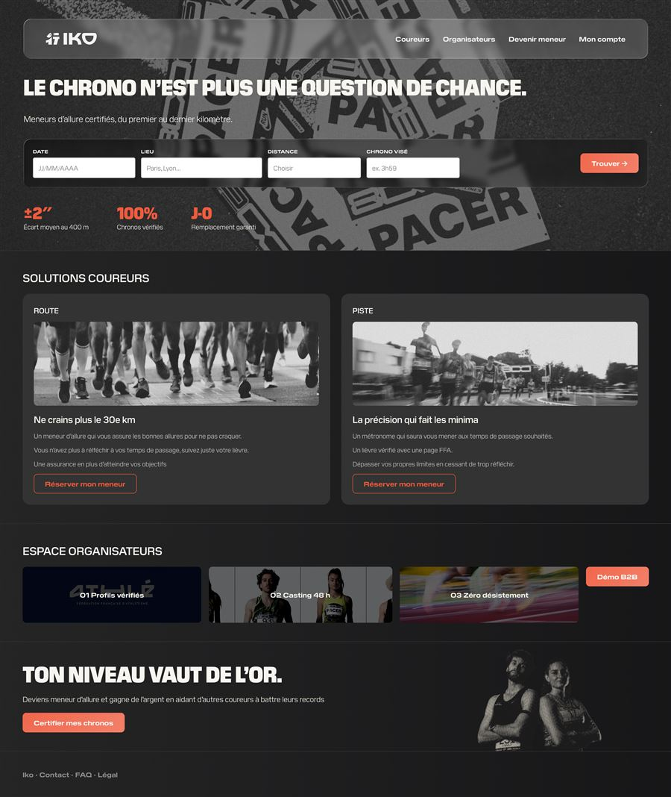
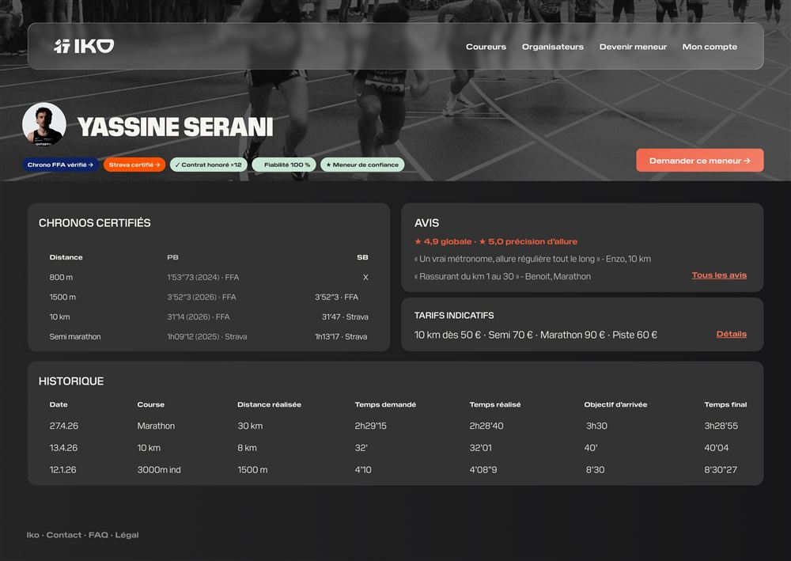
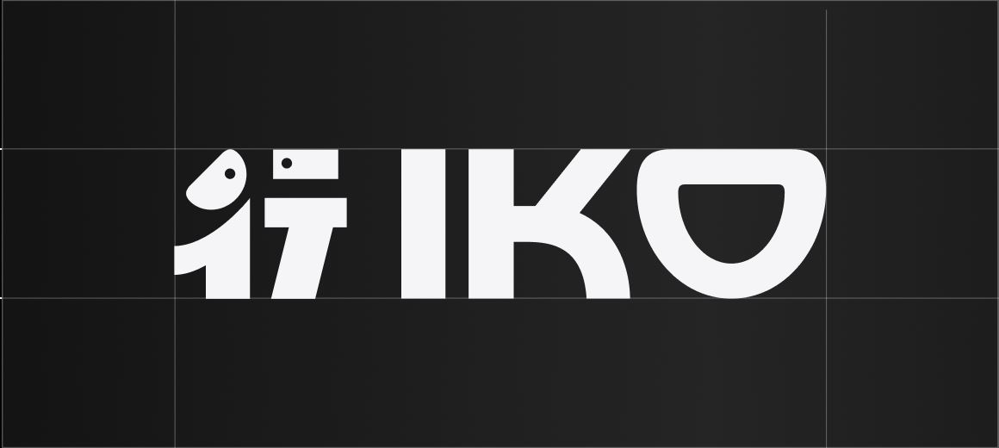
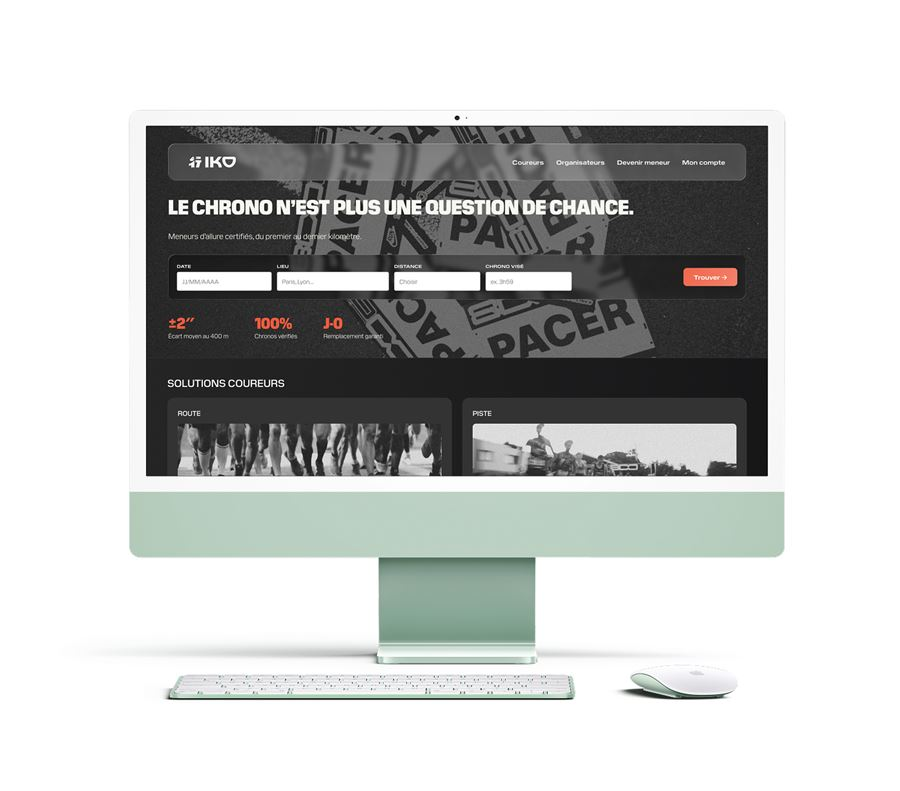
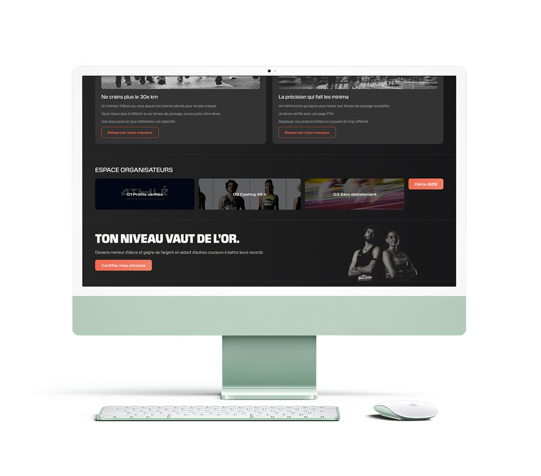
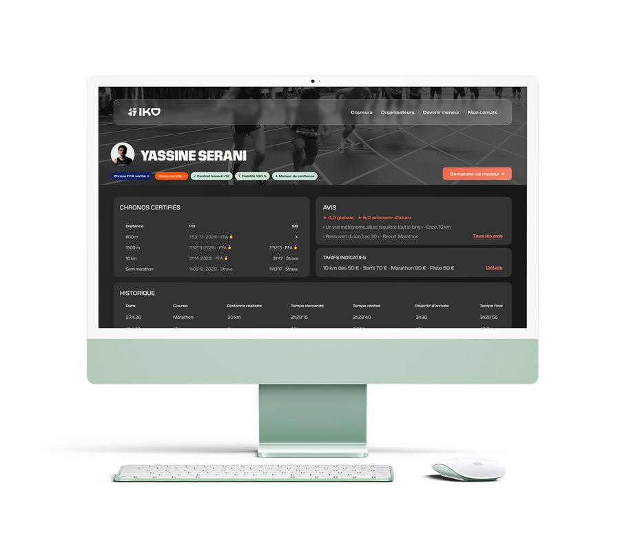
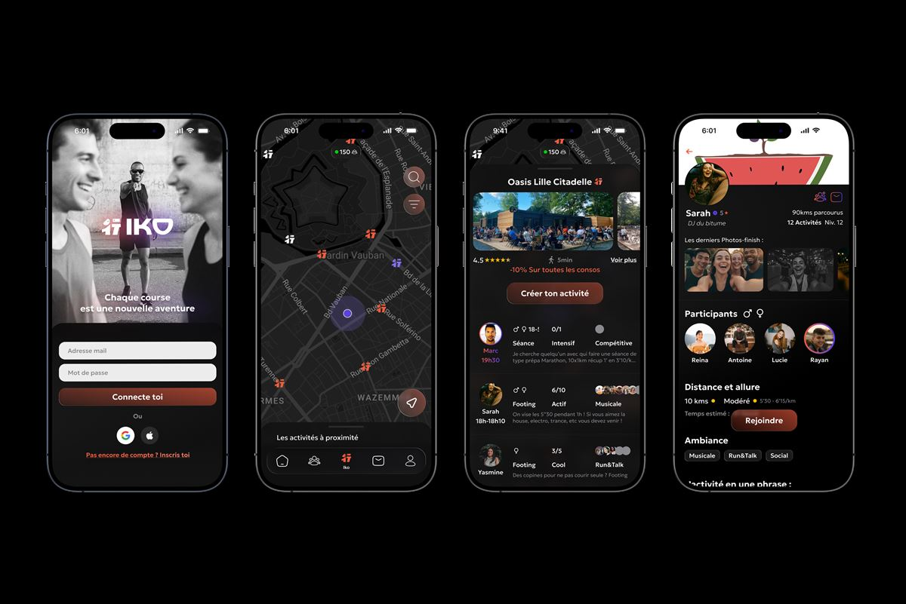

current status
10+
Athletes ready to launch
2
Race organizer committed
2027
Proof of concept target
the problem
Four personas, four pain points
Sonia (Elite Runner)
Chasing a national qualification. Needs splits accurate to 400m. Approximate pacers = season lost.
Yassine (High-level Athlete)
Trains 8 times a week like a pro. Earns 0 euros from running. Wants to monetize his level but no platform exists.
Marc (Race Organizer)
Finds pacers last-minute. Last-minute desistements on race day. No backup plan. Quality unpredictable.
Thomas (Amateur Runner)
Training for his first marathon. Fears cramping at km 30 without someone to hold the pace. No pacer = objective missed.

The solution
Sonia & Thomas
Runners book verified pacers for 30 to 90 euros per race. Certified athletes with proven track records.
Yassine (High-level Athlete)
Athletes set their own rates and monetize their level. Training 8 times a week finally generates income.
Marc (Race Organizer)
Race organizers access casting and guaranteed backup pacers for 290 to 490 euros per event, or 990 euros per year subscription.

3 key differentiators
Pace Contract
Km-by-km plan, GPS verification post-race, automatic partial refund if pace not met. The anti-disintermediation guarantee.
Anti-No-Show
Progressive deposit, pre-notified backup pacers, check-ins at J-7 and J-1. Zero last-minute surprises for organizers.
FFA Certification
OAuth auto, best efforts verification, IKO Index algorithm. Zero friction in pacer evaluation for runners




